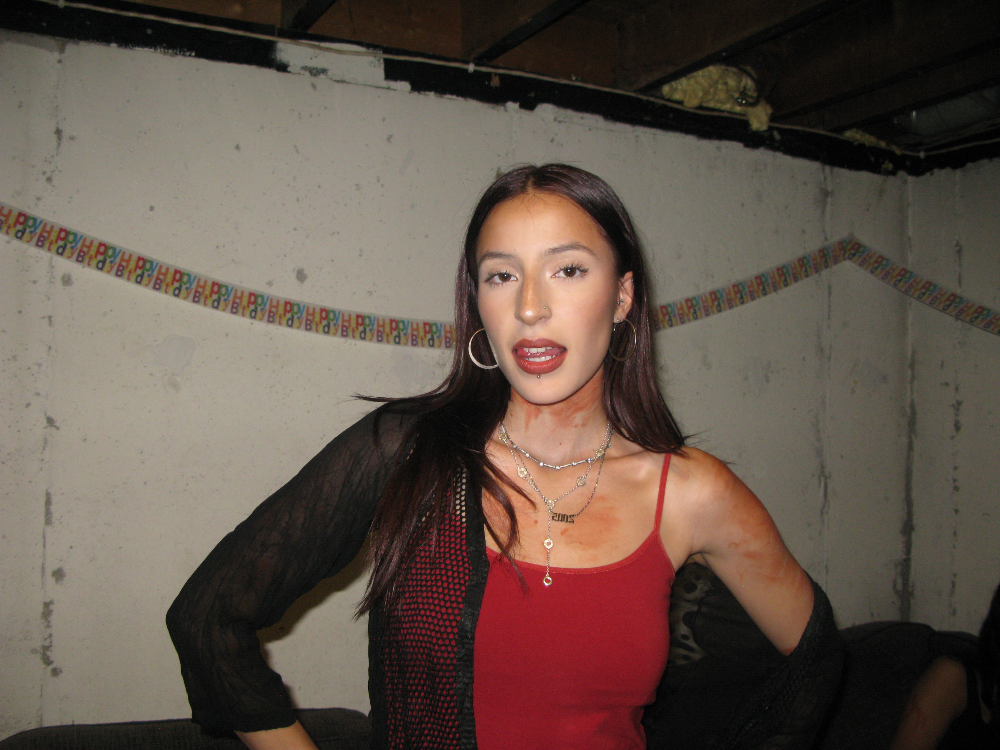
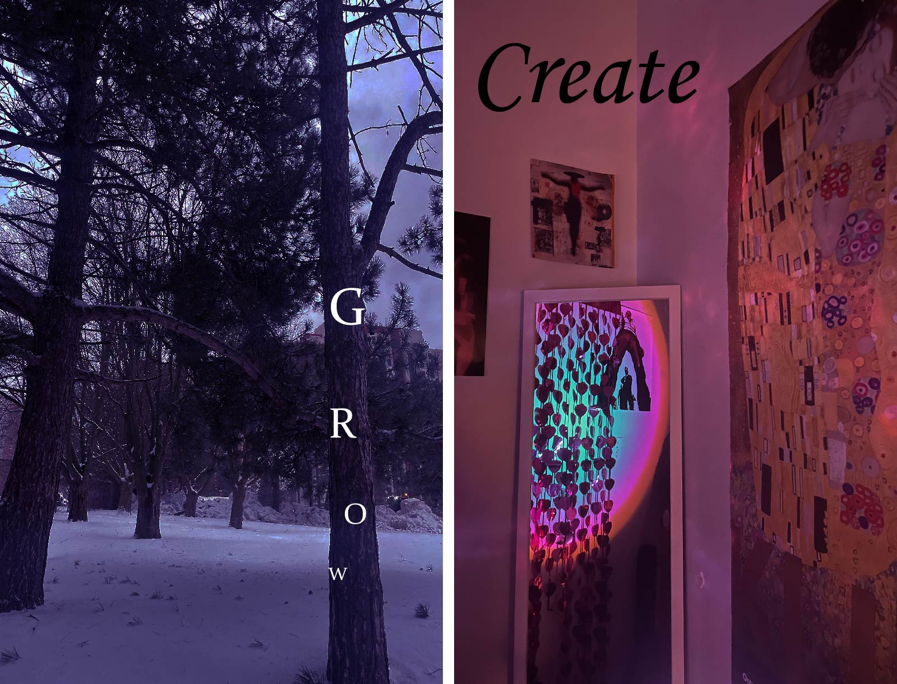
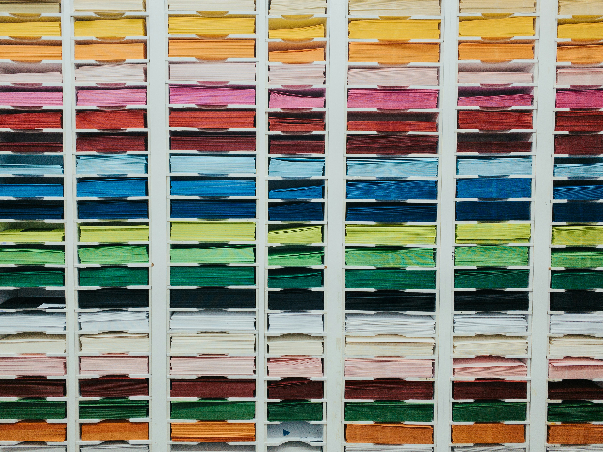
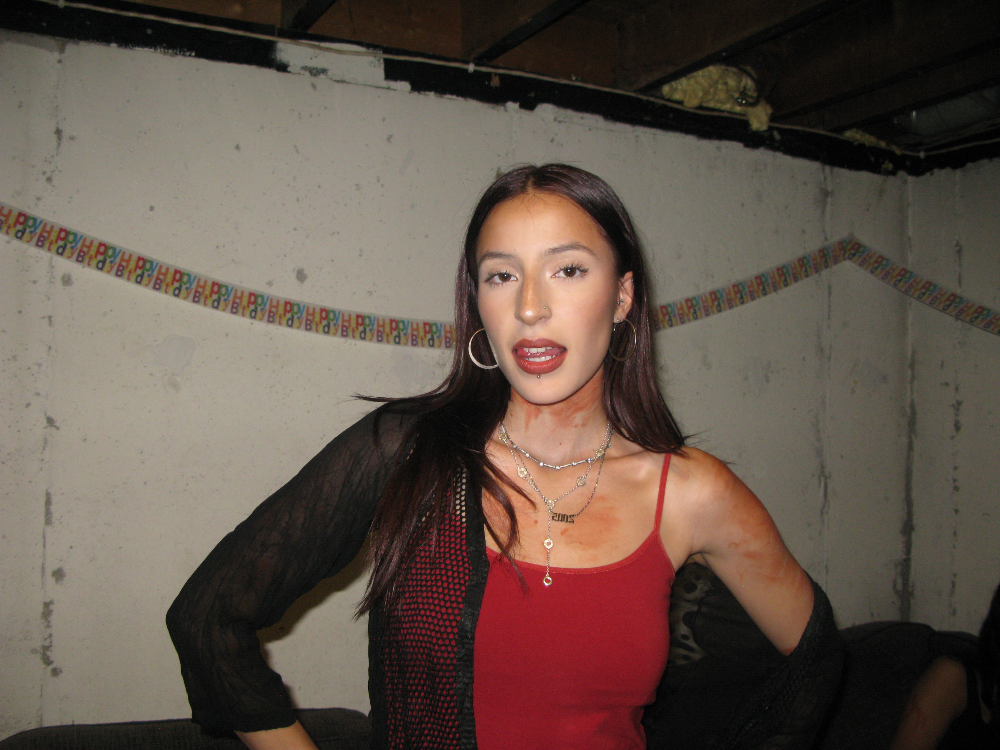
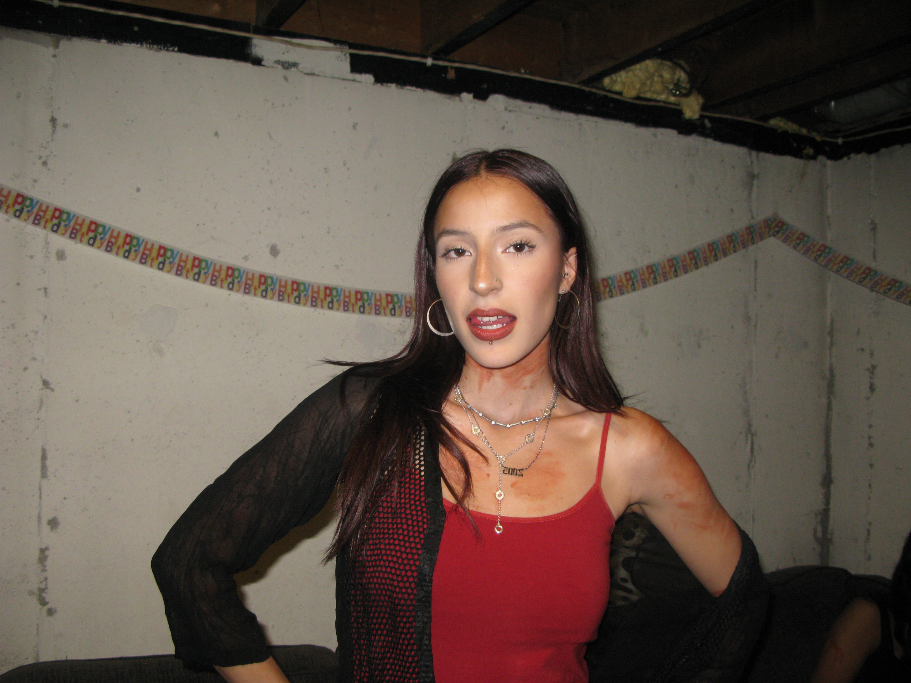

Hi, I'm Manuela! I'm a 19-year-old second year GBDA student at the University of Waterloo. I'm passionate about art, design, and music. I love exploring creative outlets and sharing my journey with others. Welcome to my site!

GBDA
The Global Business and Digital Arts (GBDA) program combines creativity, business, and technology. It's an exciting journey where I get to explore design thinking, digital media, hands-on projects, frequent collaboration, and more.
Learn more about the GBDA program on this website.

My Routine
Staying organized is key to managing my busy schedule. I need to balance academics, social time, my part-time job, and personal downtime as well. I use digital planners and set reminders for all my tasks. Here are my top tips for staying on track:
Plan your day the night before.
Set achievable goals.
Take regular breaks to recharge.

Hobbies & Goals
In my free time, I enjoy:
Exploring fashion and interior design.
Listening to music and experimenting with production.
Spending time with my foster cat, Simba.
My goals include mastering music production, and finding a job in a creative field like graphic design, sound design, fashion, or interior design.
 
